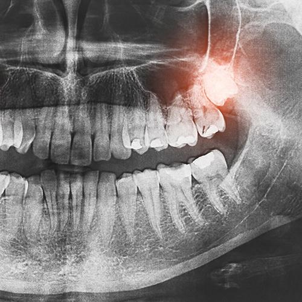
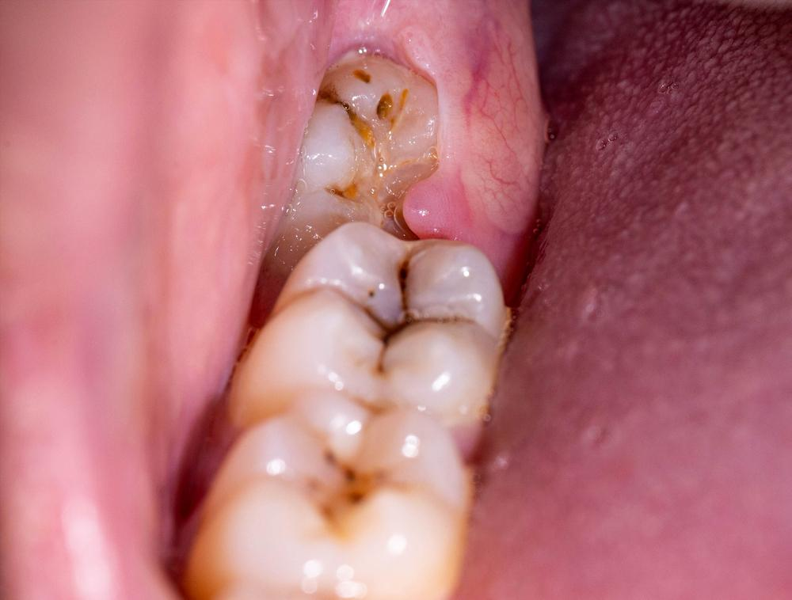
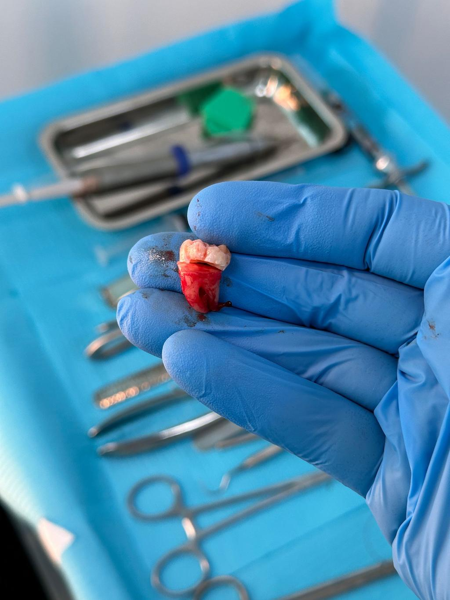

ضرس العقل من أكثر الأسنان التي تسبب مشاكل وألم شديد عند كثير من الناس، خصوصًا عند عدم وجود مساحة كافية في الفك.

يحدث الألم غالبًا بسبب: - انطمار الضرس داخل اللثة - الضغط على الأسنان المجاورة - الالتهاب المتكرر

يتم خلع ضرس العقل عندما يسبب: - ألم مستمر - التهاب متكرر - ضغط على الأسنان الأخرى
إذا كنت تعاني من ألم في ضرس العقل، فإن التشخيص المبكر يمنع المضاعفات ويقلل الحاجة إلى جراحة معقدة.
احجز استشارتك الآن عبر واتساب